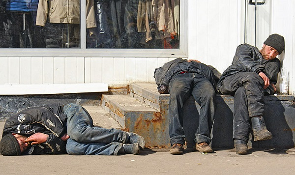

Стирание личности вследствие алкогольного слабоумия и деградации. Внешние проявления психозов сходят на нет, человек "уходит" в свой мир, ограниченный только поиском и употреблением спиртного.
Проще говоря, алкоголики, дожившие до конца третьей стадии зависимости, становятся практически неотличимыми друг от друга.
Поражение алкоголем внутренних органов приводит к хроническим, трудно поддающимся лечению заболеваниям: язва желудка, цирроз печени, инфаркт миокарда, рак желудка и кишечника и многим другим.
Поражение нервной системы вызывает инсульты, тромбозы, снижение двигательных функций вплоть до паралича.